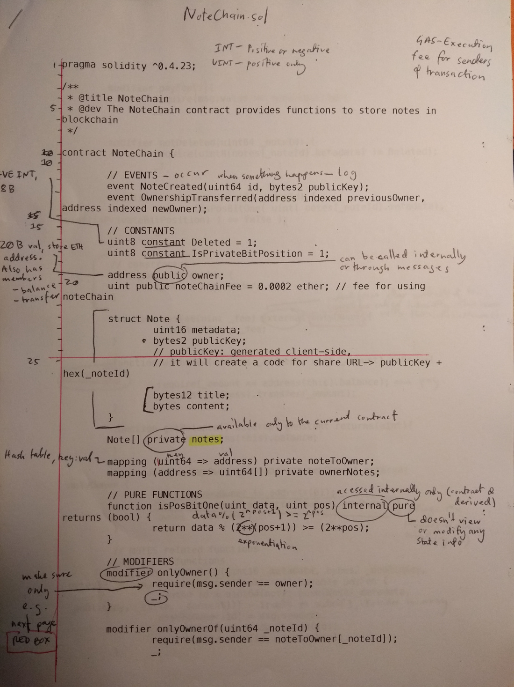

<!DOCTYPE html>

Some useful resources I’ve found so far:
In line with the courstro link above, I’ve also begun interacting with solidity programs with the ganache-cli npm package and a html/js site.
[screenshot me]
I’ve decided to use the Ethereum over Tron due to the simplicity of testing – while i can test locally with Ethereum’s web3 implementation, as far as I can tell I need to connected to an official testnet to run a live version of a smart contract, which I wouldn’t be able to do at school). Something I’m still lost about is the cost of running a smart contract on the Ethereum network, the cost of eth, gas, etc. is all very removed from me at the moment as I’ve never bought anything on the network, I’ll have to research this further.
In class we started an exercise to implement some standard algorithms in the language of our major project – I chose to do the lotto algorithm[1], where the program is to return 6 random integers from 1-100. This was interesting, as the EVM has no “inbuilt” randomness functionality, the quick solution to this is combine and hash the block’s timestamp and difficulty, then mod it to the range required. This method allows us to create 1 random number, however the block’s details will stay the same for the execution, so to generate several pseudo-random numbers we also need to include a nonce value.
return uint8(uint256(keccak256(abi.encodePacked(block.timestamp, block.difficulty, nonce)))%range);
My random function, where range is a parameter of the random() function. Note that this method is acceptable for quick, unimportant RNG, however since the miners influence the timestamp, it’s not considered appropriate for more important applications (arguably a better solution should be used for a lottery, where we take user input from each of the entrants to formulate the random values, somewhat like RANDAO[2])
[1]https://github.com/dylan-lom/std-alg-sol/blob/master/Lotto.sol
[2]https://github.com/randao/randao
Published: 2019-02-17